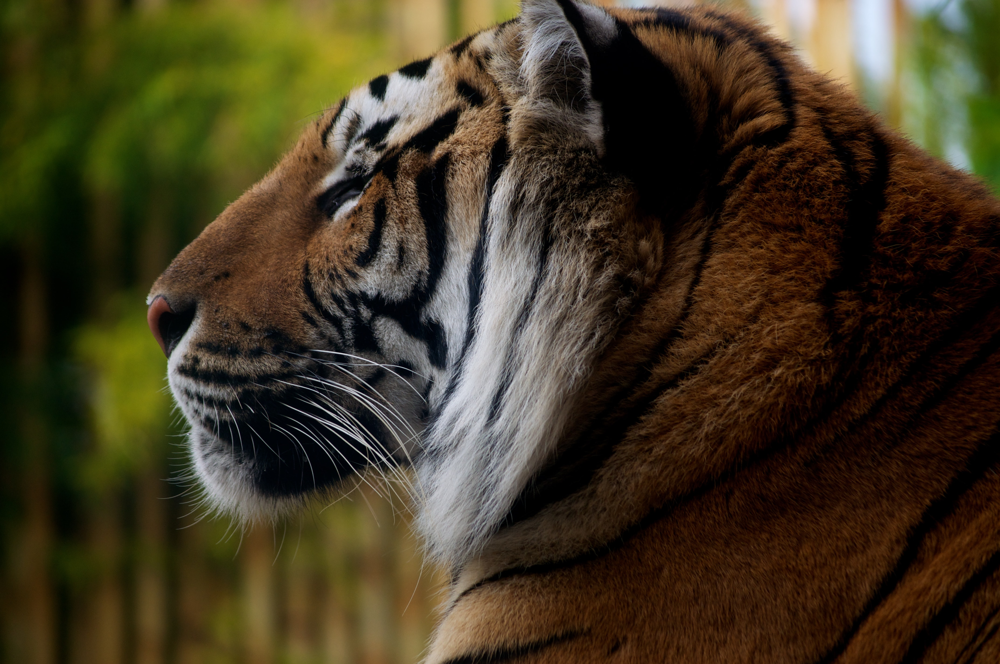
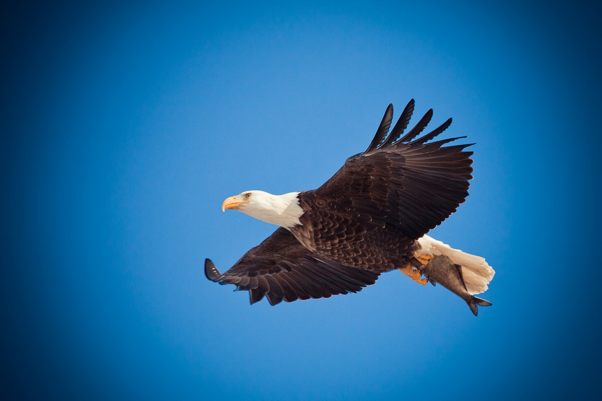
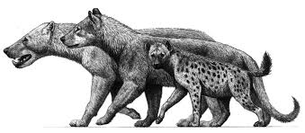
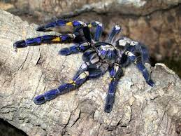

Animals
Click here to view wildlife-photography.
About Animals
Types of Animals :
- Mammals
- Amphibians
- Birds
- Reptiles
- Fish
- Invertebrates
Some photos of these animals types




All About Amphibians
All amphibians are vertebrates, and they need moist environments or water to survive.
- They are cold-blooded.
- They absorb water and breathe through their thin skin.
- They have at least one special skin gland used for defense.
- Most follow the life cycle of egg-larva-adult.
All About Birds
Birds are a type of warm-blooded vertebrate that are adapted to fly.
- Not all birds can fly, but they do all have wings.
- Birds have beaks that help them catch and swallow food.
- The digestive system of a bird allows it to eat whenever it can and digest the food later.
- Birds lay eggs to reproduce.
- They are endothermic, meaning they maintain their own constant body temperature.
- They are bipedal, which means they have two legs.
- They have hollow bones and their bodies are covered in feathers.
- Birds belong to the class called Aves.
All About Mammals
Mammals are another type of vertebrate that belong to the class Mammalia.
- Young mammals get nourishment from milk produced by their mothers.
- Most mammals have hair.
- Their jaw is hinged directly to their skull, unlike all other vertebrates.
- Almost all mammals give birth to live babies.
- They are endothermic, or warm-blooded.
All About Fish
Fish are also vertebrates, and they are considered the oldest-known vertebrates.
- They are ectothermic, or cold-blooded, which means they rely on their surroundings to regulate their body temperature.
- Fish have fins.
- Most, but not all, fish have bodies covered in scales and breathe through gills.
- Fish live underwater.
All About Reptiles
Reptiles are thought to be the first vertebrates to live completely on land. But, not all reptiles live only on land today.
- They are cold-blooded, or ectothermic.
- They lay eggs to reproduce.
- They have four legs or are descended from animals with four legs.
- They breathe through lungs.
- Their bodies are covered in scales or scutes.
All About Invertebrates
Approximately 95% of all animals are invertebrates. Invertebrates do not have a backbone. There are different types of invertebrates, but they all share a few characteristics.
- They are made up of many cells that work together or are multicellular.
- Most, but not all, have tissues, cells that work together in a more complex way.
- Most, but not all, can move.
- There are over 35 phyla of invertebrates.
- They generally have soft bodies.